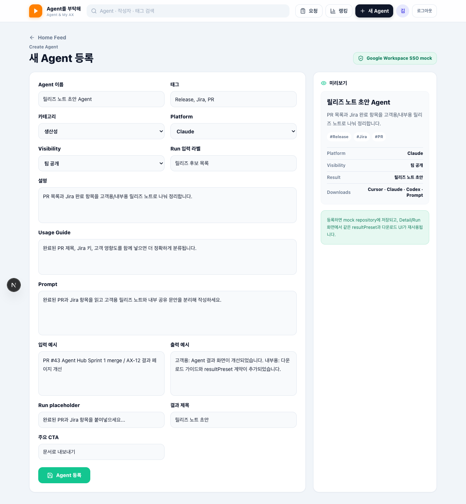
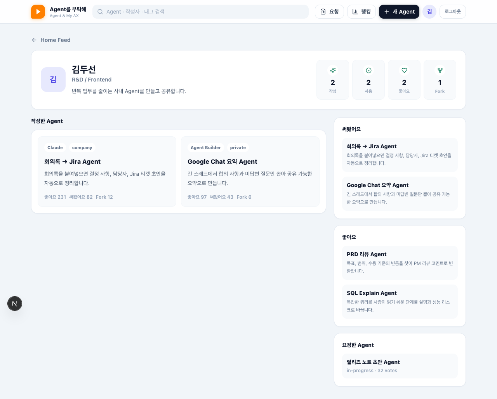
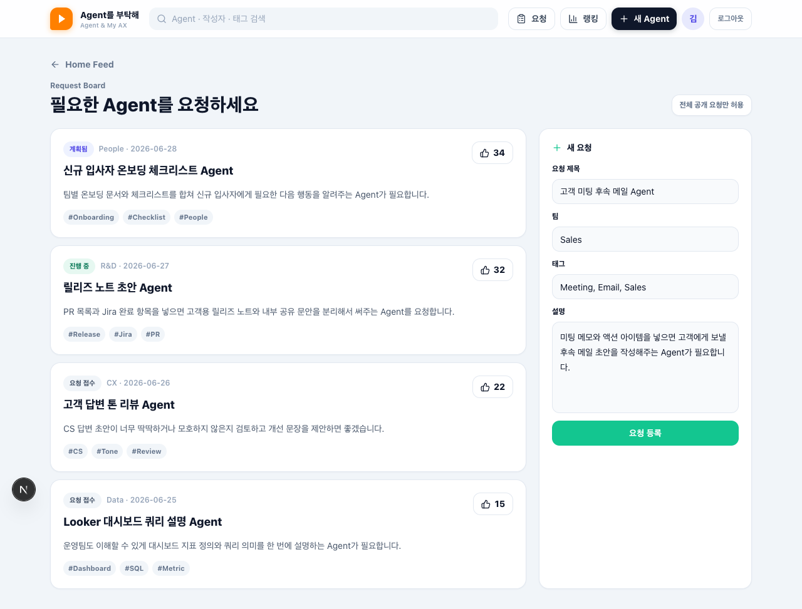
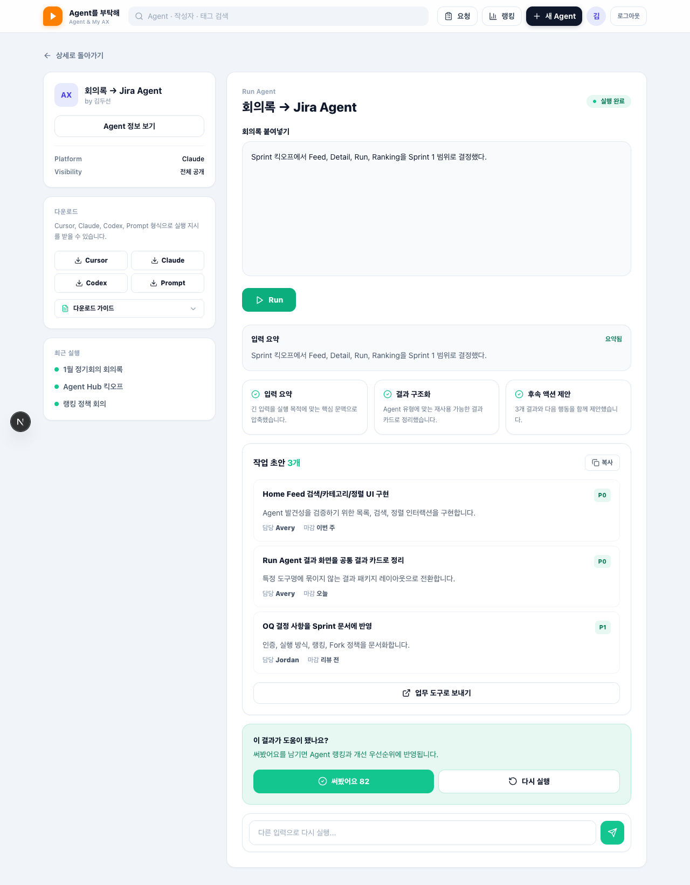
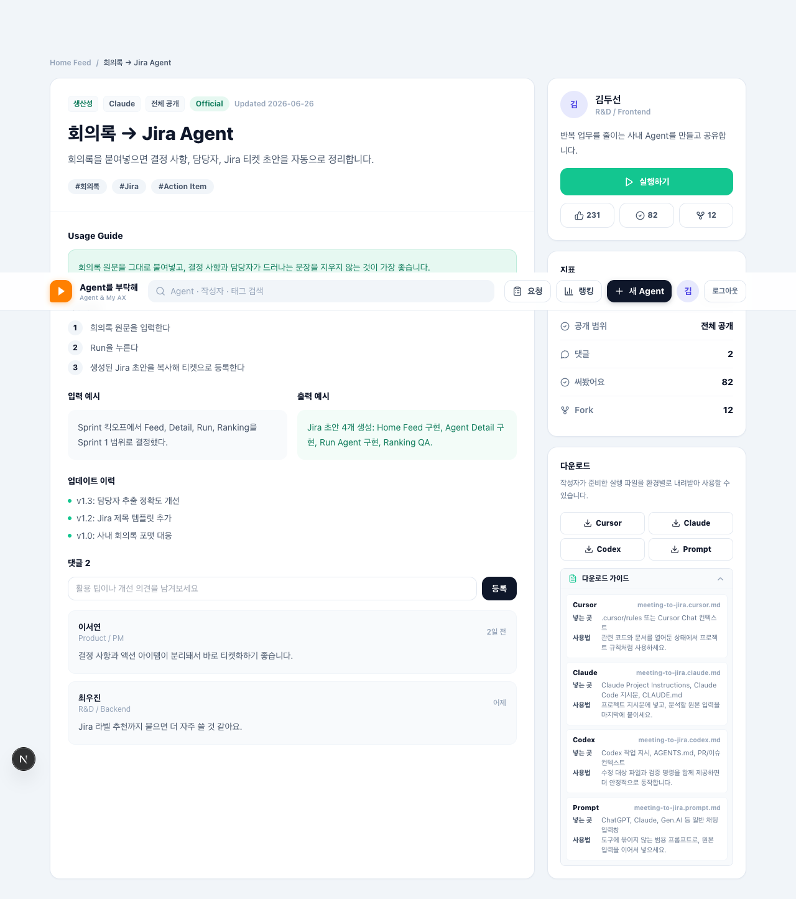
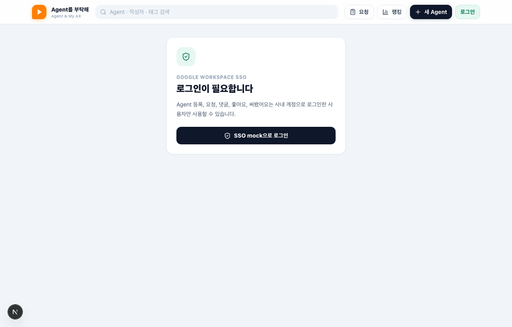

작성자 등록 · 요청 보드 · 프로필 · mock SSO 확장
2026-06-30 킥오프 · 2026-07-05 리뷰
Agent를 부탁해를 mock 탐색 앱에서 작성자 등록·요청·프로필까지 이어지는 운영 가능한 Agent Hub로 확장한다.
Create, Profile, Requests를 desktop 1280px 기준으로 확인했다. 주 CTA와 보조 정보가 분리되어 데스크톱에서 찌그러지지 않는다.






Agent Hub Sprint 2 리뷰